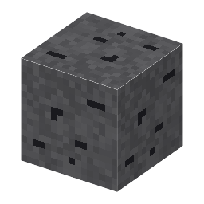

説明
①子ども 黒鉛が入った岩。
②学生 掘ると黒鉛が出る。黒鉛は電解槽の電極やボートの材料になる。
③大人 天然黒鉛は、地中の有機物（大昔の生き物の炭素）が高い温度と圧力（変成作用）で黒鉛に並び直したもの。片状・塊状（脈状）・土状の3種類がある。
④ガチ スリランカの脈状黒鉛は純度90%を超える、世界でも珍しい塊の黒鉛。地下の熱い液体（熱水）から沈んでできたと考えられている。
作り方
（作り方のレシピは無い：拾う・掘る・ほかの方法）
使い道
（このアイテムを使うレシピは無い）